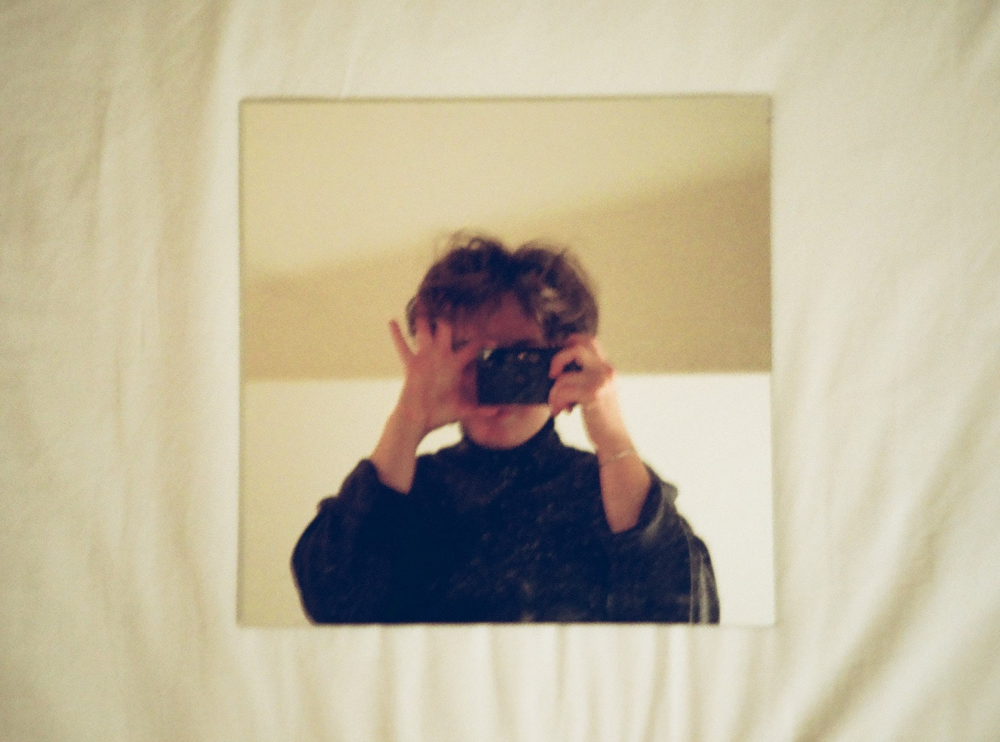

Sarah Ullerich
Sarah did research on the context and the theoretical background and was in charge of finalising and editing the design brief.
Nguyen Tuong Van Le
Van was in charge of researching and crafting the concept section of the project. She also participated in the editing of Twine and the website.
Zoe Zhao
Zoe was in charge of building the website, created data visualizations, and finis-hed the goals-part of the design brief.
